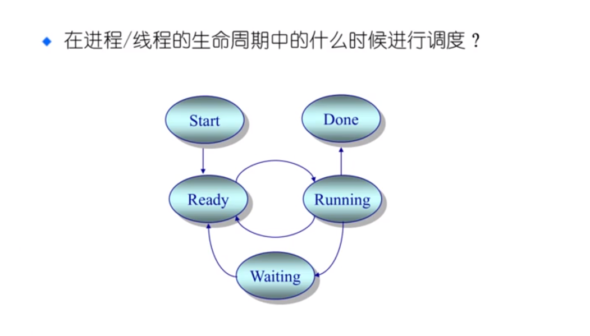
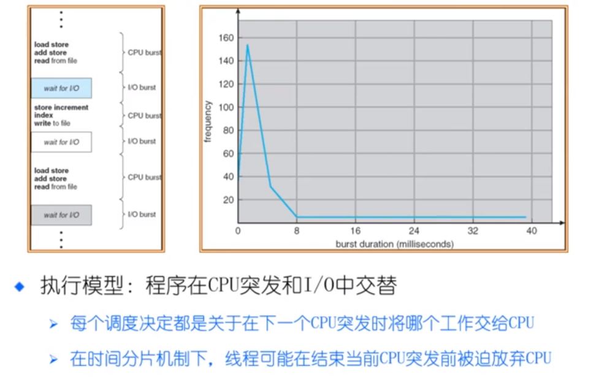
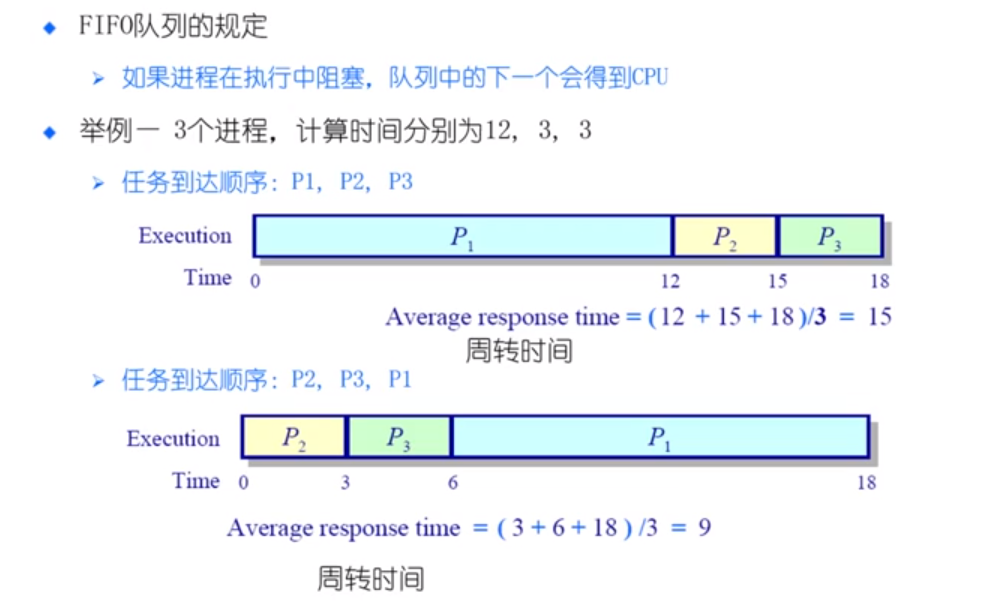
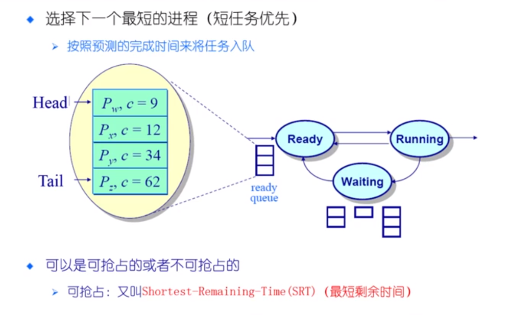
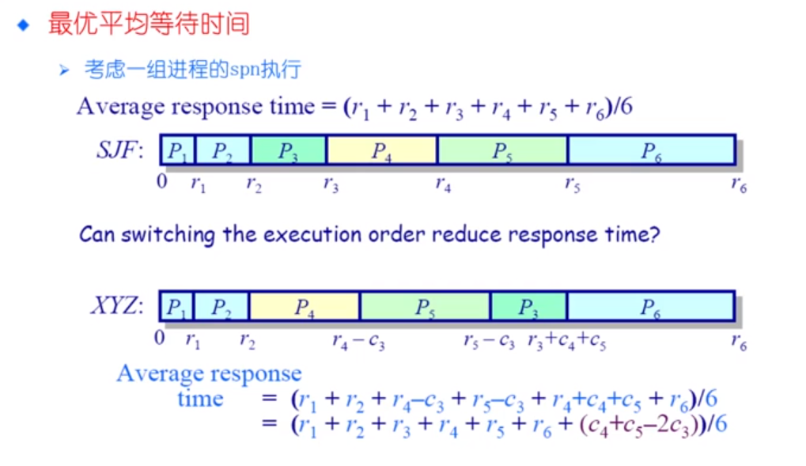

背景
CPU 调度
CPU 调度时间
上下文切换
切换CPU的当前任务，从一个进程/线程到另一个
保存当前进程/线程在PCB/TCB中的执行上下文（CPU状态）
读取下一个进程/线程的上下文
CPU调度
从就绪队列中挑选一个进程/线程作为CPU将要运行的下一个进程/线程
调度程序：挑选进程/线程的内核函数（通过一些调度策略）
什么时候进行调度？

内核运行调度程序的条件（满足一条即可）
- 一个进程从运行状态切换到等待状态
- 一个进程被终结
不可抢占
- 调度程序必须等待事件结束
可以抢占
- 调度程序在中断被相应后执行
- 当前的进程从运行切换到就绪，或者一个进程从等待切换到就绪
- 当前运行的程序可以被换出
调度原则

评价指标
CPU使用率
- CPU处于忙状态所的时间比
吞吐量
- 在单位时间内完成的进程数
周转时间
- 一个进程从初始化到结束，包括所有等待时间所花费的时间
等待时间
- 进程在就绪队列中的总时间比
响应时间
- 从一个请求被提交到产生第一次相应所花费的总时间
人们通常需要“更快”的服务
什么是“更快”
- 传输文件时的高宽带
- 玩游戏时的低延迟
- 这两个因素是独立的
和水管类比
低延迟：喝水的时候想要一打开水龙头水就流出来
高宽带：给游泳池注水时希望水龙头里同时流出大量的水，并且不介意是否存在延迟
希望调度算法达到的效果
减少相应时间
- 及时处理用户的输入并且尽快将输出提供给用户
减少平均响应时间的波动
- 在交互系统中，可预测性比高差异低平均更重要
增加吞吐量 两个方面
- 减少开销（操作系统开销，上下文切换）
- 系统资源的高效利用（CPU，I/O设备）
减少等待时间
- 减少每个进程的等待时间
低延迟调度增加了交互式表现
- 如果移动了鼠标，但是屏幕中的光标却没动，我可能会重启电脑
但是操作系统需要保证吞吐量不受影响
- 我想结束长时间的编程，所以操作系统必须不时进行调度，即使存在许多交互任务
吞吐量是操作系统的计算带宽
响应时间是操作系统的计算延迟
公平的定义
举例
- 保证每个进程占用相同的CPU时间
- 这公平吗？如果一个用户比其他用户运行更多的进程怎么办
举例
- 保证每个进程都等待相同的时间
公平通常会增加平均响应时间
调度算法
FCFS（先来先服务）
First come，First served

优点
- 简单
缺点
- 平均等待时间波动较大
- 花费时间少的任务可能排在花费时间长的任务后面
- 可能导致I/O和CPU之间的重叠处理 ： CPU密集型进程会导致I/O设备闲置，I/O密集型进程也在等待
SPN（SJF） SRT 短进程优先（短作业优先）短剩余时间优先
Shortest Process Next（Shortest Job First） Shortest Remaining Time


HRRN (最高响应比优先)
Highest Response Ratio Next
Round Robin (轮循)
- 使用时间切片和抢占来轮流执行任务
####Multilevel Feedback Queues (多级反馈队列)
- 优先队列中的轮循